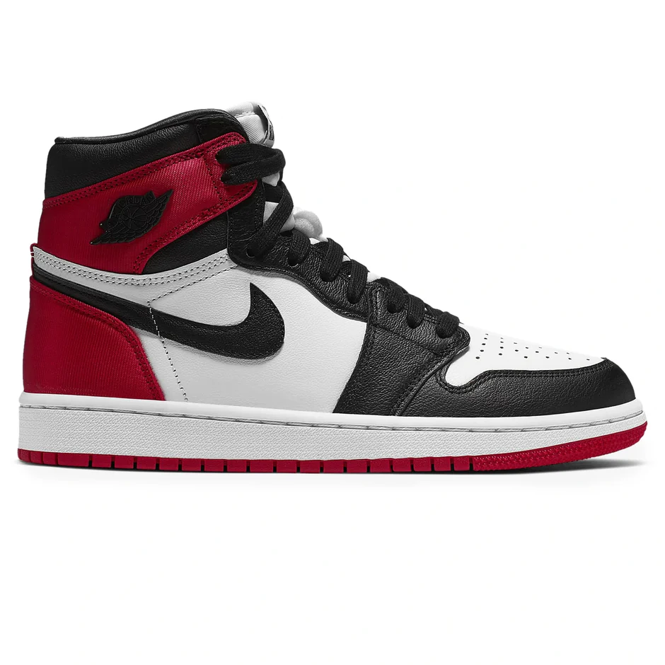

Néhány ikonikus darab:
Jordan 1 High "Fearless"
Jordan 2 x Off-White
Jordan 5 x Off-White
A Ma Maniére x Air Jordan 4

Jordan 4 sb "Pine Green"
Jordan 4 Paris Olimpics editon
Jordan 1 High "Not for resale"

Jordan 1 High "Black Toe"
Jordan 1 High "Spiderman"
Jordan 1 "Hyper Royale"